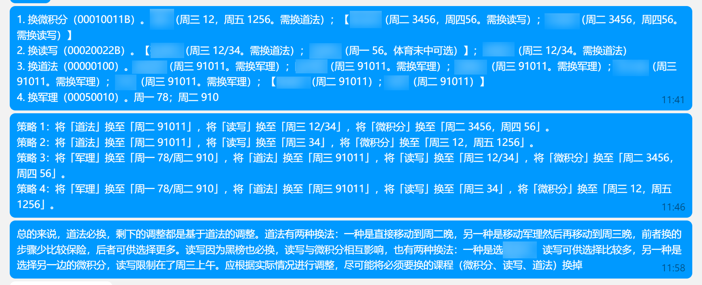

1 日
数学
昨天学到了操纵微信骰子的方法。本来没觉得这有什么用，但是看到有人说，在比如啥宿舍决定一个人去干啥啥的时候可以用，就想可以看看操纵的成效如何。
今早懒得学习（没错，时间表荒废数日了，现在也还没背 Anki），就想算一下概率。一直是一个人肯定很容易被怀疑，所以我就想， 个人依次轮流随机选择一个人，在轮到某个人（其实就是我）时，我会从其余人随机选，那么随机一轮每个人被抽到的概率是多少呢？或者说期望轮次是多少呢？
算了一下，用到的只有高中的知识，只是比较难算（即使用了 Mathematica 还是算错了一次）。
首先记正常轮次不被抽到的概率 ，这个值会常被用。
小列一下表：
第一行是经过几轮才被抽中，下面是相应的概率。补充一个 后，可以发现以 为周期的规律，写出来就是
其中 是被抽中时经过轮次为 的概率， 是周期序数（从 开始计算）， 是每个周期序号（与上面一致）。
从而有对于序号为 的期望
那么有期望
形如 的求和，高中数列常考题了，就懒得手算了，丢给 Mathematica，结果如下：
实际上有
也就是说，在 比较大时，可以用 近似期望轮次。而 ，那么还可以直接用 ，比常规抽法多了 轮。
这里用期望比较好，然后呢其它人的期望就是
好像不太能化简，我就不弄上来了。
同样算了一下极限
也就是说，这个方法在 比较大时，其它人被抽中的期望轮次与没有人「作弊」时几乎是相同的。
我也看了一下 大概是单调递减的，最终趋于 。
那么最大差异时就是 时，此时 。
然后再放几个常见的结果吧。
当然还可以算一下 个人同时作弊的情况，不过我懒得算了。
Windows Terminal
大概是昨天的事，今天才发，有够拖延的。
昨天看到篇博文 Windows Terminal Preview 1.20 Release，终于发布了。
虽然看了下更新日志没啥能让我感知很深的变化，但出于强迫症，我一定要立刻更新。但是呢「关于」页不更新，Microsoft Store 版本显示的还是 1.19（现在有了），于是我就自己去 Release 页下了 msixbundle。
但是能安装不了，显示好像说啥程序未启动之类的。
话说，我看了看别人的博客，基本上这些都可以直接作为一篇新博文发出来的，但我一般都是收录入杂记或者说这里的记事。一是因为各式各样的东西全塞在一坨，想到啥写啥比较方便，要写新博文我还得 bln（a.k.a. Blog New），还得起个标题，还得写个描述……而实际上内容又不多。而且呢其实很多解决方案我是知其然而不知其所以然，并不了解背后的原理，写出来只能说是作为一个小抄，并没能实际上真正起到积极意义，还容易闹笑话，因此不单独列而是归入比较杂乱的分类。
但也确实，记事越来越臃肿了，VSCode 统计 12 月写了两万七千多字，1 月写了一万八千多字，前者文件大小 114 KB，后者 77 KB，都太多了。很多写的没啥意义，不如去写点新博文（很久没产出了，其实最近有个念头的），抑或是开始写点领域里的东西（好像说了好多次一直没动笔）。
杂项
近两天改时间表提前半小时起床后，硬是玩手机半个多小时，磨磨唧唧起来后，又熬过一会，Anki 时间过了，就得再留到晚上。
而今天下午和晚上就一直刷 B 站了。然后晚上看到美国斩首那事情，我一个手贱去搜了下原视频，看了一下，挺突然的一开头就是提着头颅了，虽然有所准备但还是蛮吓人的。没有以前看过那么猎奇的东西的印象，不过还算是有所准备，不会给吓出心脏病。但还是怪瘆人的，虽然隔着不知道是啥东西，但是看着头颅眼睛闭着，脖子处血红色，还是相当恐怖的，而且今天又要熬夜……令人胆寒的极端活物，这种人审判都是浪费法律资源，就地枪决都浪费弹头和警力。可以理解那么一点为什么一些宗教狂热分子会做出极端的行为了，连这种思想深受毒害的人都可以做出这样的事情，更别说号召力更强大的宗教了。以后还是别手贱了，看这些毫无意义。审核机制相当有必要，YouTube 竟能让这样的视频发布成功，还存活数小时，真是审核不严。
上面说的本来犹豫要不要发出来，但是感到博客越发变成我的公开日记本的形状了，还是说出来吧，然后也会发更多琐碎的事情。当然还是得抽个时间改一下「关于」页面，把这个博客的定位写清楚。
昨天借用交换生系统查看了下绩点排名，这个交换生系统前段时间也进过，但是那个报名按钮点不动。而昨天我打开了个给的链接跳转出去后，它就跳出报名界面了，蛮奇怪的。
马原因为老师生病了，要等中旬才有成绩。目前绩点在技科里排名，是我高中三年最高年排，有点小意外，不过也不算震惊，因为还是觉得这个绩点算高了吧。
然后今天开始选课程组，课程组选择有实时排名。有点悲剧的是好像报智软的挺少的哇，目前我报智科是第 9 名，智软是第 2 名（长期智科第 10 名，智软第 1 名，下午时应该是前面有位大哥横跳了一下来到了智软，不过后面又回去了，只是现在又来了智软）。不过我倒也不会因为这个就去改报了智科。
第一学期这个绩点还是挺让我意外的，毕竟我没咋关注这件事。简单想了下大概跟老师选得好，给分高有比较大的关系。当然以后，以及现在寒假也要注重自我能力的提升，因此明天就一定要按时间表开始学习了！！！
由于今天摆烂，毛事没做，时间表回顾就也不写了。十一点半多了，往常去睡觉的时间，现在开始背 Anki。
8 日
摆烂
最新的博文其实已经点明了这几天出奇地摆烂。不过既然写了篇博文，那就不能装死了，在这里也写点吧，顺便其实今天确实有得写。
先谈谈这几天怎么摆烂的，跟前阵子摆烂有啥差异。首先就是作息又乱了，连续熬夜好几天了，都是零点以后睡的，前阵子摆烂至少作息没乱。然后就是午睡也乱了，远远超出规定时间，昨天甚至狂睡到四点，两次设闹钟后起来玩手机到吃饭，今天则是没睡着。
再谈谈 Anki，这几天摆烂得是临睡前开背，导致超时。前几天终于不堪其扰，再次下调了期望记忆保留率，结果第二天待 review 就给我一个 490+ 的震撼（前阵子一直是 450-，虽然多但还在一定范围），当时就破防了。好在今天回归了 440- 的「正常」水平，虽说现在还是没背。同时也连续三天最终 reviewed 破 800 了，自三天前 672 后直接 833、803 和 844。不过其实高中搞过好几次一天 1000+，甚至搞过 2000+（由于那段时间摆烂没背，积累了暴多，即使这样也没能一天清完），只不过其实不止是英语罢了，虽然算上英语应该也差不多。
Adobe
之前说过 Adobe Acrobat 不能更新，然后呢每次打开都会跳一次更新，然后更到最后再回退说更新失败，让人无言以对。
今天我较上劲了，就一定要把你更新了。
同时恶心地发现没打开 Adobe，后台进程却有相关进程，即使我已经禁用了开机启动和任务计划程序启动项，对这个公司更加没啥好感了。
发现服务有相关内容，一个是 AdobeUpdateService，一个是 Adobe Acrobat Update Service（这是显示名称，实际名称是 AdobeARMservice），然而我无法禁用，即使我停止了服务、关闭了所有相关进程、用了管理员身份打开等，都无法禁用。
于是我去注册表删除了……删除后服务页面会留残骸，用 sc delete 解决。给了我个教训动注册表前要备份，这个是不可撤销的操作。
然后就能修复安装了。接着是在更新还是修复安装，如果有这个服务会报错，无法进行，需要在此过程中用 sc delete 再删除（不可以只删注册表），然后就能进行了。
但是呢即使完成了更新，还是无法禁用服务，提示「拒绝访问」。
参考知对应注册表 Start 字段， 3 是手动，4 是禁用，但是也是一样的。
我也尝试了很多，不管是改权限、管理员权限打开、登录管理员账户、导入注册表、删了键再添加（添加后内容会立刻从默认 0 变成 3）等方法，都不行。
结果误打误撞成功了，方法就是把服务重命名，比如说 AdobeARMservice 重命名为 AdobeARMservicee，就可以改值了，再改回来就可以了，不会被阻止、也不会被改回。只不过还是不能直接修改，仍然是提示拒绝访问。
总之有点后悔装了 Adobe，蛮恶心的，就是不知道能不能装在沙盒，以后重装系统也许可以试试。
脚本
起码两周前的事情了，现在想起来现在说吧。
图片压缩脚本换成 VBS 了，因为不会闪终端窗口。贴出来在下面：
1 | Set objArgs = WScript.Arguments |
1 | Set objArgs = WScript.Arguments |
梯子
3 日时买了一个月梯子试试水，也估计是我第一次为工具付费吧。
12 元一个月 300G 流量，每天签到还能领流量，这梯子名字蛮广为人知的，只不过我就不宣传了，懂的人自然明白。
速度确实快不少，体验比免费的好。
但是说实在的我还真用不了这么多流量，我又不咋看油管，即使看油管流媒体流量也不会耗费太恐怖。目前我还剩 298G，这还是前几天开着梯子上 B 站看国内视频耗了 6G+，不然反而比 300G 还多。
所以说这玩意其实可以几个人共用，而且价格我感觉也其实不算贵。
查了一下，这梯子存在起码一两年了，稳定性没发现啥帖子介绍，夸的倒是不少。至于安全性，没查到安全隐患。
付款的时候，第一次付款去查了一下付款对应的公司，居然还能查到一些相关信息。结果退出来重新付款时，就换了一个公司了，还真是谨慎啊，不过不知道这是什么手法。
杂项
前阵子折腾，WSL 终端换成 Zsh 了，简单配了一下（没弄什么花里胡哨的主题和插件，毕竟还是效率优先），还开启了 Vim 模式，因为懒得记 Emacs 式的快捷键。但是 Windows 没换，首先因为懒，然后就是因为 Windows 不常用终端，没啥必要，Bash 就够用了。
话说我傻了，乱抄别人吃大亏。之前说了 .easyconn 就应该是文件夹，我改成文件后重启 Docker 容器报错了，早已经改回来了。今早 EasyConnect 访问不了校园网，重启 DEC 也不行（不过没重启 Docker 试试），当时在搞 Adobe 没咋管，后面重启数次检查 Adobe 的事情，最后弄完了发现又可以用了。
很多旧文需要更新了，例如 Vim 配置和 Windows 软件……
明日就是除夕了，还是没机会开始写私博……
9 日
除夕，摆烂也是可以原谅的吧……而且其实有做点有意义的事情，就是这个小玩意 stats.py。
就来展示一下我的博文统计结果。
公博
./stats.py -l cn -f md -R -o output _posts |
纯中文统计结果。
1 | 1 的 3036 |
./stats.py -l en -f md -R -i -o output _posts |
纯英文统计结果。
1 | 1 e 10565 |
./stats.py -l num -f md -R -o output _posts |
纯数字统计结果。
1 | 1 2 2216 |
./stats.py -S -f md -R -o output _posts |
所有字符（包括空白字符）统计结果。
1 | 1 \s 33201 |
笔记
./stats.py -l cn -f md -R -o output notes |
纯中文统计结果。
1 | 1 的 1367 |
./stats.py -l en -f md -R -i -o output notes |
纯英文统计结果。
1 | 1 a 9967 |
./stats.py -l num -f md -R -o output notes |
纯数字统计结果。
1 | 1 1 2775 |
./stats.py -S -f md -R -o output notes |
所有字符（包括空白字符）统计结果。
1 | 1 \s 51296 |
公博 + 私博 + 笔记
由于私博统计信息会暴露一些隐私，因此只贴合计结果。
./stats.py -l cn -f md -R -o output _posts _drafts notes |
纯中文统计结果。
1 | 1 的 5401 |
./stats.py -l en -f md -R -i -o output _posts _drafts notes |
纯英文统计结果。
1 | 1 t 18160 |
./stats.py -l num -f md -R -o output _posts _drafts notes |
纯数字统计结果。
1 | 1 2 4945 |
./stats.py -S -f md -R -o output _posts _drafts notes |
所有字符（包括空白字符）统计结果。
1 | 1 \s 86058 |
当然这个统计没有纳入记事板块，因为记事板块我正在写，会造成干扰（其实是忘记了，而且复制粘贴好累）。
已经过零点了，爆竹声震耳欲聋，Anki 还没背（虽然 review 降到 410+ 了，难道是降低要求起效了？），悲。说起来去年似乎没啥过年的印象（再往前记忆已经消失了），也许是因为高考。
说起来，以后我再也不会（让 Copilot）写 Bash 脚本了，真的是累人且抽象，真不如直接用 Python。
还有，我一个不大会表现出生气的人，跟 Copilot 对话血压蹭蹭涨，几次想要骂出来。我觉得我还得去学学 Prompt 工程。
14 日
这么多天没来写，写点印象深刻的吧。
OneDrive
大概是前天（也就是 12 号）晚上，突然发现 5T 的那个 OneDrive，变成 100G 了，查了一下发现也有人遇到类似的问题，比如这个我的教育版onedrive的存储容量突然从5T缩减为100G，请问是为什么，可以恢复吗？知乎上也有类似的问题，了解了一下大概与 Microsoft 365 教育版中存储产品/服务的变更有关。
我查了一下 5T 和 1T 的订阅分别是 Office 365 Education for Students 和 Office 365 A1 for students，前者是国内的世纪互联，我没在上面找到对应。按理来说应该是后者降到 100G，而且我也发现了类似问题，比如 onedrive教育邮箱从1T突然变成100G。按照上面说的，综合我的理解，后者大概也会降到 100G。
奇怪的是前面看的大概都是 8 号左右的，而我是 12 号才发现（11 号还确认正常，当时下了个大东西看过 OneDrive），也没啥邮件通知什么的。
ITSC 询问了微软那边，因为假日还没回复。不过我感觉恢复可能性不大，毕竟这是微软官方那边做出的决策，除非学校掏钱买更贵的订阅，不然应该是没法恢复了。
于是我看着 4T 的占用陷入了沉思……
前者是不动时，比如刚开机没有任何同步操作。后者是有文件改动或变化时就会提示空间满了，叫我清除，然后变红色。
即使是 1T 那个我也占用了 170+G，也是超过 100G 的限制。
而我本地的设备的储藏，最多支持 2T，而且已经有一部分占用了。所以说在等待正式的死刑判决前，也只能先这样僵持了，就是不知道超过存储文件会不会自动清除，还能否正常下载上传（上传感觉不大行）。
收藏夹
由于 Edge 收藏夹有点杂乱了，顶级目录快占满了一排，于是就重新整理了一下。
更简洁、更有条理了。但是代价就是点开一个网页要打开可能更多目录了。解决方法就是不再手点了，而且重新整理后位置也不太一致了，而是改用 PowerToys Run 的插件来搜索。
不知道还有啥比较重要了，就到此为止吧，有多的明日或以后再补充。
16 日
Windows11
怕忘记了，先来写一下。
不知道我有没有提到过，近段时间 Windows 更新总有一个 KB4023057 更新失败，其它更新都能正常下载安装，就它不行。关键是它是 23 年 22H2 的补丁，而我早都已经 23H2 了。我查了一点资料，但都不奏效，而且也没啥影响，只是看着不爽，就置之不理了。
然后昨晚好像是有啥 23H2 更新，我不太记得了，下载安装后，今早两点去睡觉时选择了「更新并关机」。
结果八点半起来后，发现更新卡在 27%，我等了一会都不动，感觉是卡死了，就长按电源键关机了（因为我简单查了一下没发现有啥终止的方式，我也等不了，再者它没提示请不要断开电源或关机啥的，我记得别的时候是有的，估摸着不要紧）。
重新打开后，它说要撤销更新，然后完成后就再次关机了，我重新打开后可以正常进入了。我就想着会不会和那个补丁有关系，就打算今早就把它解决掉。
折腾了一下，发现错误码还不唯一，遇到过 0x80246019（这个似乎最常见）还有其它的（这个是我不知道弄了啥后就变了，我记得是 007 结尾好像）。历史记录看不到了，因为当时开着隐私窗口看别的，顺带在那里查阅资料，结果关机重启后隐私窗口就丢失了，连带着我参考的一个教程只做了一半就结束了。
然后上面的那个方法，要打开 service.msc，我试了一下，发现类似「管理员已阻止你运行此应用」的提示，又去查如何解决，发现要用 gpedit.msc，发现也是一样的提示，看了看别的，似乎 .msc 结尾的都不行，然后我就用了别的方法，它说是 mmc.exe 无法运行，我就找到它然后转移所有者给我，再给我完全控制的权限，就可以操作了。然后就是上面说的操作一半结果重启后不见了。我估摸着是更新一半强制关机导致的问题。
最后懒得折腾了，选择去下载 Windows 11 磁盘映像来进行修复。经过漫长的安装后，终于可以了，虽然还是显示那个补丁，但是这次可以正常安装了。同时这次我不在 Beta 了，不过因为我账户在预览计划，所以估计后面还是会进 Beta。
还有之前看到过有 Dev Home，但是我却没有，这次重新安装后也有了。
还检查了一下 mmc.exe，所有者变回去了，那就好。
但是弄完后发现有个问题，就是 AutoHotkey 自动启动报错了，提示啥找不到这个路径啥的，然后它 \ 显示的是 ¥，我之前也听说过日韩等国路径分隔符会显示成别的符号的事情，还以为是这里的问题。但是这个难办，无从下手。
DummyValue := RegRead("HKEY_CURRENT_USER\Software\Microsoft\CTF\TIP\{81D4E9C9-1D3B-41BC-9E6C-4B40BF79E35E}", "DummyValue") |
后面去查了一下注册表上面那个路径，发现还真没有 DummyValue 这个键，我直接傻了，想着微软你怎么改这么多哇。于是又打开 Process Monitor 去监视，结果发现还是那两个值，再去注册表一看，这下又有了……所以说重新安装后，应当手动去切换一下兼容性按钮……
然后我记得一切带 Shift 的键都按不了了，一开始是想用 PowerToys Run 打开 DEC 使用 >dec，结果 > 打不出来，后面发现 ! 或者 Vim 退出的 Space + Shift + Q 都不行。然后忘了做啥了，或者说啥也没做，重启后就行了。
现在又在下载 Windows 11, version 23H2，不知道是 Beta 还是啥，总之希望别出啥幺蛾子了……
安装了很久，我等了很久还没装完，最后 94% 我去午睡了，醒来后去重启更新，又卡在 27% 了……还是一样的强制关机了，时间太长了。这次 msc 可以正常打开，但是更新无法正常进行，似乎又回到了下载阶段，现在还是 0%……
Windows11 续
写很长了，开个新标题。目前在备份个人文件夹、博客文件夹和 WSL，趁着这时间补充一点今天又折腾了什么玩意的内容。
后面又经过漫长的下载安装，用了大概有一个下午，终于可以再次更新了。为了避免再次出问题，完成下载安装后，我用刚学的 tar 命令备份了一下 $WINDOWS.~BT 这个文件夹，用 BZip2 把近 30G 压缩到不到 10G，然后重启更新。这次就终于突破了 27% 的界限，完成了更新。
之前忘记说了，前面的更新重启桌面也跟这次一样会变成黑色，还跳出来一个不兼容提示（今天前，似乎很久前也遇到过，选了不再提示就置之不理了），如下图（背景纯黑色就是桌面背景，我没在桌面放应用）。
然而这次没等我为更新完成而喜悦，就发现开始菜单用不了了（这个问题之前好像在群里见过，只不过没找到了），试了一番网上的方法，无论是 sfc DISM 抑或是 PowerShell 都不行。
还发现很多诡异的事情，包括但不限于
- 给我装了 Windows Terminal，我之前装了 Windows Terminal Preview 后就卸掉了前者，不过考虑到前者是系统内置也没什么大不了的。不过我默认设置的是 WTP，结果用 Win + T 和
wt打开的是 WT。 - 网络问题，这里网络问题不是说不能上网什么的，都可以，是 OneDrive 登不上去了，而且我想看看更新内容，提示也说网络问题。
- 不兼容的输入法用了了，只好暂时改用兼容的。
我也放弃折腾了，选择重置电脑，据称个人文件夹和其它盘不受影响，但是出于保险，我还是备份了一下个人文件夹（部分）、博客文件夹和 WSL，其它就听天由命吧。还有装在 C 盘的应用，得后面手动装了。唉今天折腾了这么久，Anki 不知道能不能在装完后背。
重装后
洗完澡后又折腾 40 分钟才成功用 Vim 打开写点新东西，而现在已经重装完大概两个小时了。
先说说明显的好处，就是系统流畅了不少，至少 Edge 和文件资源管理器如此（但是文件资源管理器地址栏的 Bug 还在），当然也可能是重装完很多东西没弄好，没启动。还有就是 C 盘小了很多，在有一个 50+G 的 Windows.old 的情况下还能有 100G 的空间，我寻思之前除了差不多 30G 的 Ubuntu-22.04 以及 Adobe, JetBrains 等大部头外也没啥大的了，怎么就只有 50~80G 了。
其它盘数据都在，C 盘应该就留了个用户文件夹。不过设置没了，但却还记得我的双拼方案，以及词库（像一些词比如 l**m、q**w 都还是第一关键词）。
然后就是很不好的体验，写出来当作教训，以后吸取。当然今天晚上还弄不完，得明天花一天来弄，同时计划着开篇新博文记录坑，引以为戒，同时避免重蹈覆辙。
- 微软 & 联想捆绑下一堆蛋：刚装完就给我送大礼，前者主要指的是微软电脑管家和恶心的小组件，后者就多得很了。基本已经卸载完了，可能有残余，明天最后收尾时再检查一次。下次重装要研究一下怎么不装这些东西，微软的可能办不到，但后者是一定要解决掉的。
- Edge 备份：上次的惨痛教训，让我自动每周备份 Edge，等的就是这个时候。开始重置后意识到还没备份 Edge，最新备份是 11 号的，于是去任务计划程序开启任务启动备份，只可惜没备份完就重启了，Windows 自带压缩程序看是空的，虽然说有大小。不过还是够用的，用上了 11 号的备份，结果发现插件还是不行，插件还是没有数据。慌了一下，想到
Windows.old存有 Edge 全部数据，比我备份的都全，欣喜若狂，去拷贝替换，结果还是不行。但这个属于 Edge 那边的，等我弄完系统再去弄。奇怪的是有历史记录却没 cookies，难不成还是用的云端数据？那你本地存在哪里了？这估计仍然是目前损失最大的部分。 - 任务计划程序没备份：上面说打开任务计划程序启动备份，结果我自己忘记备份里面的内容了。好在不多（最多十几个吧），影响不大（哪个有影响恢复哪个）。
- 注册表没备份：这个其实没啥影响，注册表备份也没啥用，重要的是改了什么。而且
Windows.old里疑似有注册表信息，弄完别的后可以看看。同时为了避免 Windows 用啥存储感知啥的把我Windows.old删掉了（前面似乎出现过莫名其妙消失了，所以不敢冒险），移动到了 D 盘。嗯，还是有点影响的，比如 Potplayer 以及 Honeyview 设置就存在注册表里面。 - 环境变量没备份：这个还算有点影响，我是去打开 Anki 才发现的（Anki 弄了个环境变量指示存储位置），然后比较重要的就还有 PATH，这个也只能出现问题再修复了。说起来 PATH 要把 WindowsAPP 这个默认唯一的路径移动到最下面，否则例如
python就会跳到 Microsoft Store 里。 - 应用安装：Python 我添加到 PATH 后，命令行可以用了，但是 Vim
py3不行。估计是 Python 用的安装版的原因，但也不想弄便携版，担心改变东西出什么事情，于是还是装了安装版，同时顺带升了个大版本，从 3.10.11 升到了 3.11.8。管中窥豹，估计还有很多是要重新安装的，即使装到了 D 盘里。 - ……想不到了，想到再补充
幸运的是，还好备份了 WSL，当时重置前给了我个不会保留的应用清单，太长了而且还有很多是别的盘的，我就打算自己去 C:/Program Files 里找，结果发现 WSL 也在里面，才想起来 WSL 没备份。要是这个丢失了，我估计就不是在这里发牢骚，而是真的上吊去了（开玩笑）。不过估计 Windows.old 50+G 有 WSL 的一份子。
明天先把基本的东西装好，恢复 80%（除 Edge），再研究研究 Windows.old 里的东西，看一下能否恢复更多东西，如注册表、任务计划、Edge 等。同时也打算全程记录一下，给下一次重装提供参考。
虽然说因为经验不足还算损失了不少（在 Edge 这里摔了不知道多少个跟头，我感觉那个自动备份可以停了，一点用处也没有），但是呢也希望借这次重装，吸取更多教训吧。
Anki 非常抱歉，又 postpone 了 420 张。
19 日
本来不打算来写，但是晚上吃草莓时看到瘆人的画面，鸡皮疙瘩都起来了，所以就随便写点。
晚上洗完澡出来随手抬手擦了一下鼻子，发现流鼻血了，不知什么原因。后面摸了一下大概是鼻口附近有伤口吧。
昨晚（或者说今天凌晨）补 Anki，两天没背，所以比较多。痛苦无比，最后十多张感觉花了数分钟才清掉，真的就是 1s 短时记忆都持续不了，C 级词太恐怖了，太痛苦了。
于是比较痛苦的我不知道为什么想起来「酒」这个意向，就去搜了一下之前看过的某篇文章，一搜就搜到了，顺带前前后后多看了一点，很开心回去上床睡觉。似乎这几天（也许两周了）都挺晚睡了，估计今天也是。
然后闭眼不久，蚊帐里传来蚊子嗡嗡声……起身开灯关帐拍蚊，找到了一拍，似乎把它翅膀拍伤了，搜寻一番后把它躯体丢到床一侧地上，然后从另一侧下床去洗手时，决定赶尽杀绝绕过去，发现不见了……后面隐隐约约又听到嗡嗡声，但不确定是不是，抑或是幻听，没有一开始那么明显，于是捂耳睡觉。
今天嘛，虽然主旋律仍然是摆烂不动摇，但还是学习了一点（指看了点科普视频）。
下午（不说上午是因为上午真的倒是一直在纯摆烂）去看了看火柴人，我印象中看过三次，第一次印象不深，第二次似乎是大战 KO 结束后一集左右的时候，有之前看过的印象，同时差不多补完了 AVM？今天 AVM 主要看了看那个重制版，虽然有看过，但是部分剧情没啥印象了，而且多视角看得好累，眼花缭乱。但是水平是高技术力，佩服得五体投地。同时还记得之前似乎还看过数学篇，只不过似乎看一半看困了没看完，后面内容没印象了，今天补了，同时顺带看了物理篇。当然因为看不懂还去看了讲解视频，接着又看了点数学科普，就差不多到现在了。
还有一个比较犯蠢的差点忘讲了（记忆真差劲啊），上面那个图片拖动到 VBS 脚本显示错误「系统找不到指定的文件」，代码 80070002，搜了一下未果，试了试改编码什么的都不行。后面灵机一动想到会不会是 FFmpeg 没加到 PATH，可是我分明有这个记忆。一去看还真有，不过一检查，发现我是直接复制路径名，而 ffmpeg.exe 在 bin 里……
25 日
开学前一天，随便讲点吧。
飞机
昨晚本来是六点钟飞机，延误到八点半，然后给了我一个免费改签的机会，看到有个四点钟的飞机。十二点多吃饭看到了，不紧不慢、慢条斯理吃完饭后，简单收了一下东西才改签，预计两点半才出结果，但是很快就通知我改签成功了。于是一点多打车到机场，完成各种手续进场。
候机在「卫星厅」，要坐之前回来那个「地铁」，到了后发现又延误到近五点，不过我还是很高兴，不管怎么说比一开始提前了。
刷了会手机后，决定不如就在候机处背 Anki，反正迟早得背（早上时借飞机上背的借口没背），差不多背完后登记，剩下的在飞机升空后完成了。
简单收东西，复杂找东西。一回家时用的是笔记本外出用的无线鼠标，后面换有线了，无限的接受口不知道放哪里去了。回去时，我断定它在笔记本的挎包里，也没有去验证就回来了，于是乎现在笔记本无无线鼠标可用了，外出只能用触摸板了。
摔跤
今早去吃早餐时，一个踉跄摔了一跤。我也没蹦蹦跳跳，也没不看路（不过踩到滑滑的地方还是算不看路的），也没大跨步啥的，就正常走路，一脚踩上去没立住就失去平衡摔倒了，还好不算重，话说我似乎很久没摔跤过了。不过真是究极社死，也幸好人不多。然后迅速爬起来后感觉手机掉了，一揣兜，感觉还在继续走，路人提醒我手机掉了……发现寒假以来我的手机多灾多难……
华为
前几天华为应用商店跳出个提示（也许没有，是我记忆出岔子了），可以改地址，于是我改到了香港，乱七八糟的东西少了不少（一码归一码，国内公司搞这些着实抽象，可以理解但也不太能接受）。今天要给手表加宿舍门禁 NFC 时发现找不到「钱包」选项。说起来手表寒假带回家修了，只是寒假也一直没戴。网上搜了很多内容都未果，最后在官网看到，「我的钱包」要有大陆的华为账户才可行好像，改回来后（不过我记得好像一定时间内不能再改啊，然后后面它又提示我认为我在大陆让我可以改回来，我选择了不再提示），就可以了。
这些似乎是联通的？我只改了应用商店，但是钱包也变简洁了，不过南大那个金陵通皮肤没了，我还以为校卡没了要打算重新录，恢复后就又有了。
选课
制定了详细的退补选策略（其实还没完成，因为今天摆烂所以没有时间补了），只可惜退补选开始时间我即将去上体育课。
家
假期综合征，不想开学。
家里真好哇，无忧无虑，吃的、睡的都比学校好，还常常能听到猫咪的叫唤，听着心痒痒的。
一回到宿舍感觉进了囚室，睡着硬邦邦的床，吃着难以下咽的饭菜（中午晚上都没吃完之前常吃的炒饭，家里饭量是学校两倍呐），闻着宿舍挥之不去的意味，上着简陋的厕所，就连键盘按键都是家里的舒服（但键盘位置宿舍更不错），屏幕高度（尤其是副屏）也是家里的更合适……
不知道为什么，家里睡得比宿舍多，但是每天都比宿舍困。不过现在刚回宿舍心还在家里，也蛮困了，又想不到有啥可写的了，就这样吧。
26 日
课程
这是课程最多的一周的课表。周一晚上的科光是 7~14 周的，周二下午的计基是双周的，也就是说这样的魔鬼周有 8、10、12、14 四周，图中显示的是第 8 周。
形策教务系统也没有，不知道是如何，但我记得一开始选课时好像是有的？有的话大概是周三 7、8 节，即便如此周三也算是课少的了。
经过我的一通操作，周五没课了，喜提学四休三……然而代价就是周四从早八不停歇上到晚九，而且都是知识量很足的课程，不像上学期周四有一节是体育课，同时有一半的时间周二也是如此。
如果说上学期周四是噩梦星期四的话（上学期周四只有 7、8 节没课），那么这学期的周四就是地狱星期四，周二晋升为噩梦星期四，同时每隔一周就会临时升级为地狱星期二。
上学期只有周二周四上午的微积分需要早八，而现在则是换成了离散数学，同时加了一个英语读写。
但是我其实是比较满意的，毕竟制定的退补选策略超预期实现了。

这是策略初版，发在 QQ 上，是选课结果出之前做的，因此有「体育未中可选」。至于我上面为什么说没完成，因为下面说「读写可供选择比较多」，但我没去整理了，所以说还没完成，所幸没有采用那个策略。
为了准备退补选，放弃了午休，养精蓄锐等候一点半的到来。
依照上面的计划，再根据自我的判断，微积分会比较难抢，英语次之，军理和道法大概会比前面稍微好抢一点，因此决定按「微积分」「读写」「道法」的顺序进行退补选。
在准备阶段，也计划好了决定采用策略 1，一个老师比较热门，只有几个位置了，另一个老师也是红榜，但人数还有很多。决定先尝试抢第一个，失败后果断转向第二个。事实证明正确无比，第一个果然没抢到，尝试几下无果后迅速转向第二个，等我完成抢课流程后第二个老师也已经满了。
紧接着是英语，见缝插针拿到了策略中优先级第二的老师。
由于花了点时间去抢数学和英语，道法已经没有红榜老师了，只有一个二十多人的黑榜老师，由于我英语是基于换道法的，必须得换，所以先拿了黑榜老师。
同时军理调换了一下顺序，选择了周三晚上，不在策略中，但也不错。
紧接着收藏了几个红榜老师，同时把微积分和读写优先级比较高的也一并收藏了。
果然上天眷顾了我，道法有人退掉了红榜老师，眼疾手快抢到了。接着是英语优先级第一的老师也发现了并拿下了。
因此除了微积分外，都实现了最好的结果，而微积分也已经是超出了预期了。所以我还是很满意的，尽管还是收藏着微积分优先级第一的老师看看能不能捡漏。
其它课程呢，中了体育、科光和一个悦读，都是算红榜的，通识没中不过也无所谓了。
游泳上学期听老师说（老师不仅教太极，还教游泳，虽然不知道老师跟我们提这个干嘛）游泳馆在维修，学期初用不了。今天第一节课也确认了如此，不知当时想的是什么选了游泳，前几周又无法下水，有点小亏。
说起来我似乎真的十年没下过水了，小学时学过一段时间蛙泳。当时还能闭气两分钟，现在一分钟都不行了。
话说我怎么小时候尽学些乱七八糟的东西哇，像什么国际象棋、素描，国际象棋到现在只会规则（还有一个我印象最深刻的开局，可能是因为我被这个开局杀过？），而素描已经是完全忘光了，现在画个正方体都画不好（不过我还记得几个名词比如啥明暗交界线啊）。真是一段惨痛的记忆，学这两个的记忆都不是太好，尤其是后者。
听老师说这学期的体测分由 2400 与引体组成，引体因为惨不忍睹的成绩降低了要求，11 个就满分了。11 个不是随随便便，也不用像上学期突击一下了。怎么能降低要求呢，要我说应该 20 个及格，25 个满分（开个玩笑）。
2400 那真是要了我老命了，今天课上就跑 2400，跑两圈肚子就感觉有针扎，开走，甚至不如第一次跑，那会还能坚持下来六圈。
AnkiDroid
上软工计中途下课时看了眼 AnkiDroid release 页，发现 2.17.1 released 了，迅速下下来安装，虽然说我现在都不用 AnkiDroid 了。
结果没发现右键的那个「发送到手机」，多屏协同也启动失败，手机显示蓝牙什么问题什么的。飞机上我也试过多屏协同，也是提示这个失败，当时没多想，虽然感觉蓝牙跟网络没啥关联，但是考虑到飞机没网，也就猜测是网络的问题了。这个问题说大不大，说小不小，小就是其实不常用，最常用传文件可以用 QQ 代劳，今天就是这样解决的，APK 文件手动删掉 .1 然后安装，大的就是用时就比较麻烦，而且电脑管家已经装上了。
奇怪的是刚重装时还可以用，现在却不行了，等我有时间检查一下吧（虽然今晚没课就有时间了）。
蓝牙
说到蓝牙才想起来昨天忘说了。前几天，估计是 24 号，蓝牙耳机突然「坏了」，表现是声音断断续续，而且「似乎」左右耳不会同时有声音。断断续续其实并不准确，因为断一段时间后它「似乎」会迅速提速「赶」上画面。
其实并不是蓝牙耳机的问题，我测试了连接手机，正常输出。而且电脑上测试了本地视频、流媒体，都是一样的。然后猜测是电脑音频处理的问题，外放也正常，也排除了。所以就认为是电脑蓝牙的问题。接着我就卸掉了蓝牙一个设备，整个蓝牙就消失了。我估计重启就会回来了，但也没去试验，然后似乎就是去赶飞机了。
等到了宿舍，恢复正常了，才想起来这档事情，但昨天忘记写了。
今日事今日毕
今天看到这个有感，今日事今日毕，由此我想到了更加惨痛与令人印象深刻的，也就是下面的这个。
警钟长鸣，希望对我有所警示吧（不可能的）。
自焚
写完上面的内容，刷会 B 乎放松一下，结果就看到了美国现役空军今日在以色列驻美大使馆前自焚的新闻。然后在 B 站看了打码的视频。
看到这个事件跟这个月看到斩首的新闻时，我都沉默了，但是心境不一样。之前那个斩首的新闻，不仅有生理上的恶心，还有心理上的恶心。而这个新闻，看着他在烈火中，在痛苦的嘶喊中，还能喊出 Free Palestine 的口号，不是为了他一己之私，是为了一个跟他毫不相关的民族、国家的解放事业，可以说是一位拥有国际主义精神的英雄了。正好前段时间也了解过了释广德，可以算是美利坚的释广德了。但是释广德是为了本国人民，而这位英雄是为了别的国家的人民，可以说又更高了一层。
当然，震撼过后也是惋惜，我觉得不值得，也很极端。他也知道自己的行为是极端的，边走边说但比起巴勒斯坦人民遭受的待遇来说一点也不极端。纵使我不认同，甚至是强烈反对他的做法，我仍然对其保持崇敬之心，他值得我的尊重。本来想说愿他能在天堂得到救赎，不过想了一想，比起这个，他更在意的应该是巴勒斯坦人民的解放吧，因此就希望这个事件能像释广德事件一样，掀起一场浪潮吧，唉。
Free Palestine 那里还没写时 Copilot 就已经给出了中文口号了。唉，魔幻的世界。